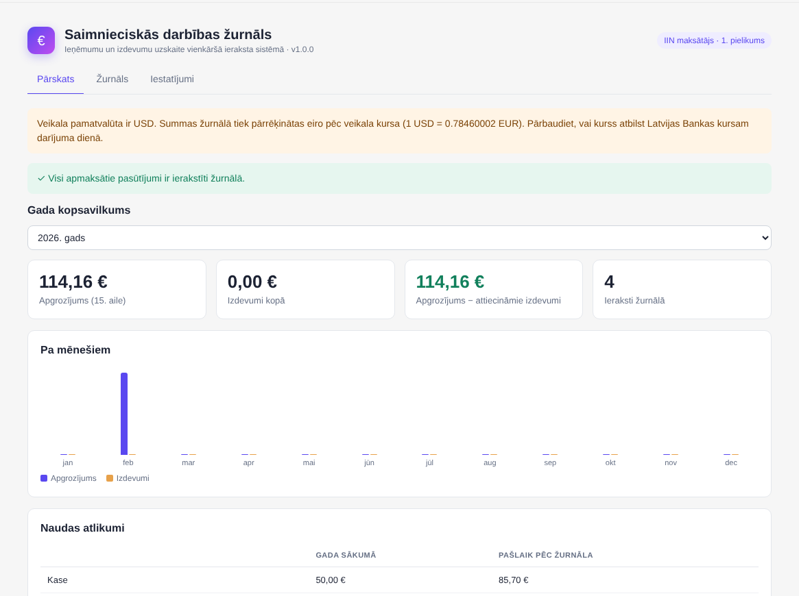
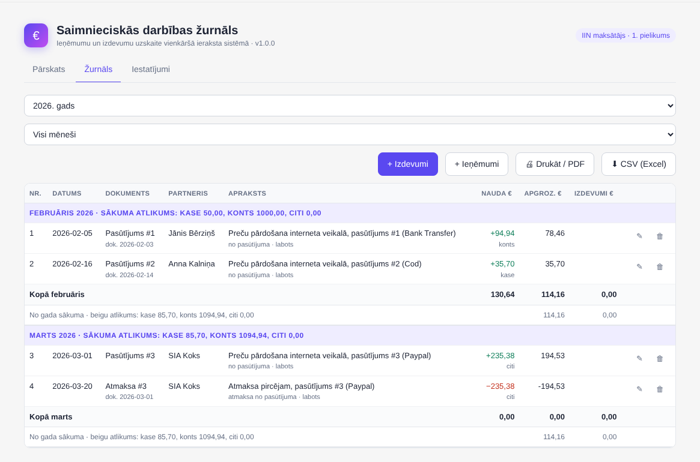

Individuālajiem komersantiem (IK) un pašnodarbinātajiem: ieņēmumu un izdevumu uzskaites žurnāls (MK noteikumi Nr. 322), kas aizpildās no jūsu OpenCart pasūtījumiem, – ar rēķiniem, čeku foto un izmaiņu vēsturi. SIA paredzēts modulis „SIA grāmatvedība”.
OpenCart 3 + 4 vienā pirkumāNetiek mainīti OpenCart faili12 mēnešu atjauninājumi un atbalsts
Demo video
32 sekundes, bez skaņas, ar parakstiem
Ko tas dara
Apmaksātie pasūtījumi, atmaksas un maksājumu komisijas tiek ierakstīti žurnālā automātiski, brīdī kad mainās statuss
Nekas netiek dzēsts: importētie ieraksti ir aizsargāti un tiek laboti ar korekcijas ierakstu, manuālos var anulēt ar iemeslu, katra izmaiņa redzama vēsturē
Rēķini ar nepārtrauktu numerāciju (R-2026-00001), kredītrēķini pie atmaksām, nosūtīšana pircējam e-pastā
Izdevumi no čeka vai rēķina foto: teksts tiek nolasīts pārlūkā, foto netiek sūtīts uz internetu; fails tiek saglabāts kā attaisnojuma dokuments
Pārbaudes: trūkstoši pasūtījumi un atmaksas, sākuma atlikumi, konta izraksts (camt.053), PVN 50 000 € un ES OSS 10 000 € sliekšņi
1., 2. un 3. pielikums, Latvijas Bankas kurss darījuma dienā, drukāšana (PDF), CSV, grāmatojumi un JSON grāmatvedim
Uzņēmuma profils no reģistriem (UR, VID PVN, ES VIES): modulis pats nosaka uzskaites formu, nodokļu režīmu, PVN pienākumus un sliekšņus, ar saiti uz avotu pie katra secinājuma; PVN statusu pārbauda reizi nedēļā
CMR pavadzīmes: izejošās un ienākošās, aizpildītas no rēķina vai pasūtījuma, piesaistītas rēķiniem un ierakstiem, ar 24 ailu izdruku un saņemšanas atzīmi
Latviešu, angļu vai krievu valodā
Grāmatvežiem: bezmaksas licence profesionālai pārbaudei – sazinieties ar izstrādātāju
Sagatavo žurnālu - neiesniedz deklarācijas VID
Ekrānuzņēmumi

Pārskats ar pārbaudēm un sliekšņiem

Žurnāls: aizsargāti, anulēti un salīdzināti ieraksti